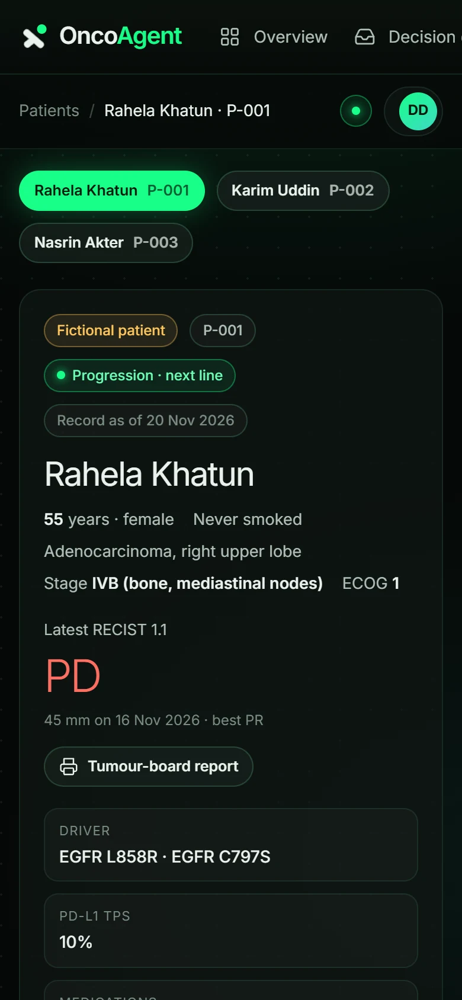
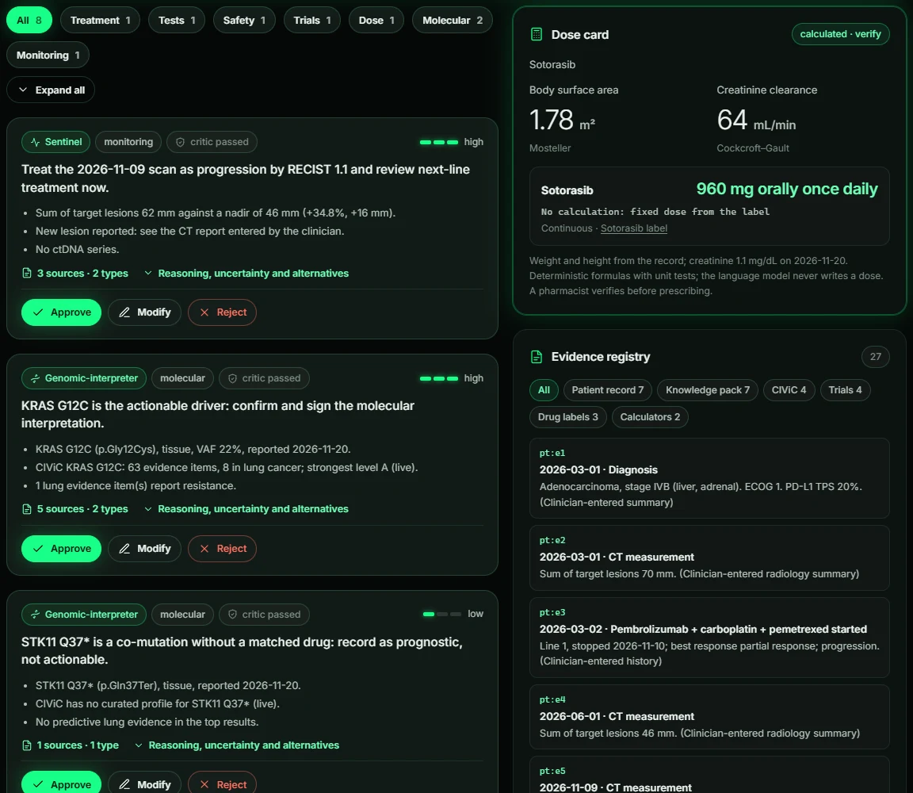

Meet OncoAgent
An assistant team for the oncologist.
Built for oncologists and clinical staff. There is no patient app.


Live product, oncoagent.vercel.app · desktop and phone · fictional patients
Clinician case intake
Beyond the demo: enter your own case.


Knowledge pack, NSCLC
No setting fits the case? It says so, and the agents propose no treatment.
EGFR, ALK, ROS1, BRAF V600E, MET exon 14, RET, NTRK, KRAS G12C, HER2, no driver by PD-L1 and histology, second line. No names, record numbers or dates of birth are collected. Shown: an example case, KRAS G12C after chemo-immunotherapy.
The doctor stays in control
Every proposal waits for a clinician's signature.
The decision tool refuses to sign without a clinician token. In the demo the log is stored in the browser; production stores it server-side.

Sign-off for Rahela's leading option, with the doctor's note
Open by design · MCP
Any MCP client can call OncoAgent's tools.
extract_report reads report text with no AI; analyze_case runs all nine agents on a de-identified caserecord_decision refuses without a clinician tokenEndpoint: oncoagent.vercel.app/api/mcp (Streamable HTTP) · stdio: npx tsx mcp/stdio.ts. Every client gets the same nine tools and the same clinician-token rule.

In-browser tool tester: interpret_variant for EGFR C797S returns live CIViC evidence